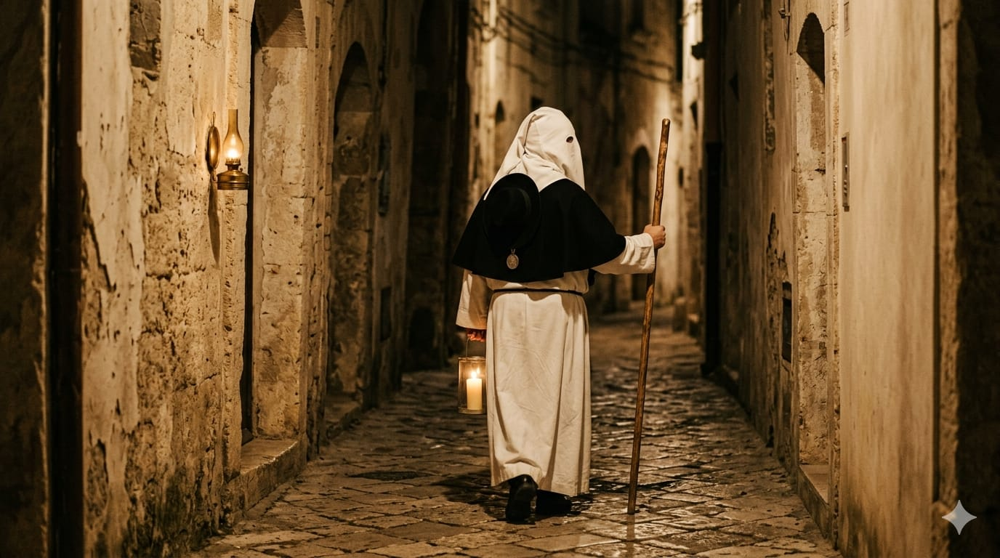
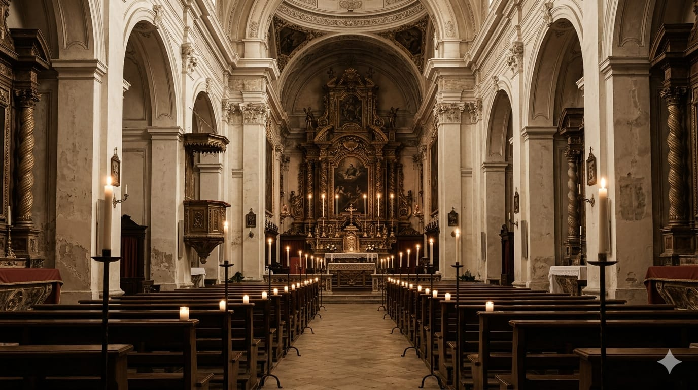

Taranto e le processioni penitenziali del Mediterraneo. Un gemellaggio con Siviglia, un convegno scientifico diffuso di tre giorni, una Notte Bianca estiva della musica sacra mediterranea.
La Settimana Santa di Taranto è tra le più antiche, lente e intense del Mediterraneo cristiano. Le sue radici documentate risalgono al 1703. Il passo ondulante dei Perdoni — la nazzecata — i ventiquattro poste della Processione dei Misteri, i bordoni dei confratelli, le marce funebri della Banda: un patrimonio riconosciuto nella comunità scientifica italiana, quasi invisibile fuori dai confini nazionali.
Siviglia è la capitale europea delle processioni penitenziali. Le sue 68 Cofradías, la Madrugá, la Macarena: il modello più studiato al mondo. Un gemellaggio istituzionale e tra confraternite — non solo tra Comuni — apre la rete europea dei riti penitenziali cristiani. Estendibile a Braga, Malta, Corfù.
Non un convegno accademico chiuso. I panel si svolgono in una rete di parrocchie del centro storico e della città nuova: ogni chiesa ospita una sessione, e dopo la sessione un breve concerto di musica sacra mediterranea. I partecipanti camminano fra le chiese, riproducendo la logica dei Sepolcri.
Un venerdì di luglio o agosto, otto chiese restano aperte dalle 21 all'una con un programma coordinato: canto gregoriano, marce funebre, canto bizantino, musica maronita, saete andaluse, canto sefardita. Il turismo estivo incontra il patrimonio sacro. Un format inedito in Italia.
Siviglia ha 68 Cofradías, la Madrugá del Venerdì Santo, un sistema turistico da centinaia di migliaia di visitatori internazionali. Taranto ha la nazzecata, i 24 poste, una sobrietà che la distingue dal volume iberico e la rende in qualche modo più preziosa. Un dialogo mai costruito. Proponiamo questo.
La novità rispetto al convegno accademico tradizionale è la forma diffusa: i panel non si svolgono in un'unica aula universitaria, ma in una rete di parrocchie del centro storico e della città nuova. Dopo ogni sessione, un breve concerto di musica sacra. Il partecipante cammina, conosce la città, riproduce la logica del pellegrinaggio ai Sepolcri.
Le forme del rito penitenziale cristiano: contemplazione versus flagellazione. Il modello tarantino del "rallentamento motorio" (Alfonso di Nola). Il ruolo dell'incappucciamento. La teologia del perdono tra cattolicesimo, ortodossia e maronitismo.
Le marce funebri tarantine e la tradizione bandistica di inizio Novecento. La saeta andalusa. La musica bizantina della Settimana Santa greca. Il canto maronita libanese. L'innografia sefardita. Connessioni e prestiti reciproci.
La "gara" del Carmine e dell'Addolorata: un'economia rituale. Le candidature UNESCO già attive (Siviglia, Popayán). Il possibile percorso di candidatura UNESCO della Settimana Santa tarantina: prospettive, ostacoli, alleanze.
Una singola notte estiva, un venerdì di luglio o metà agosto. Dalle 21 all'una di notte, otto chiese aperte, un programma coordinato di musica sacra del Mediterraneo cristiano. Il pubblico si muove liberamente, con una mappa; i concerti partono ogni 30–45 minuti in punti diversi. Ovunque uno vada, c'è sempre qualcosa da ascoltare.

Chiese, parrocchie, chiostri sono resi disponibili a titolo gratuito dall'Arcidiocesi e dai singoli parroci, trattandosi di manifestazione a sfondo spirituale e patrimoniale. Nessun affitto di sala.
Il Conservatorio Paisiello coordina tutta la programmazione musicale. Studenti e docenti eseguono i concerti come parte del proprio curricolo e dell'attività istituzionale di promozione musicale. Nessun cachet.
Musicisti maroniti, bizantini, andalusi coperti tramite Istituti di Cultura esteri (Cervantes, Camões, Hellenic Foundation) che sostengono direttamente trasferte e ospitalità dei propri artisti all'estero.
I docenti universitari partecipano a titolo istituzionale attraverso i propri dipartimenti. Missioni finanziate dalle università, non dal Comune.
Canali istituzionali già esistenti: sito del Comune, Arcidiocesi, Pugliapromozione, canali diocesani e confraternali nazionali. Zero pubblicità a pagamento nell'anno 1.
Tre persone, quattro notti durante la Semana Santa. Stima: circa € 2.000. Copribile con sponsor privato locale (banca di territorio, Camera di Commercio, Fondazione). Il ritorno simbolico e mediatico è incomparabilmente più alto.
Idea della mappa pubblica della Notte Bianca estiva. Le otto chiese, il percorso a piedi nel centro storico, orari di partenza dei concerti, tempo di cammino tra l'una e l'altra. Realizzazione: mezza giornata di un dipendente comunale.
Una raccolta permanente di musica sacra del Mediterraneo cristiano, curata dal Conservatorio Paisiello, pubblicata dal Comune di Taranto. Ascoltabile tutto l'anno, non solo durante la Notte Bianca. Contiene i brani e gli ensemble storici che rappresentano ciascuno dei tesori musicali messi in dialogo dal progetto.
Stampa sticker resistenti · costo totale: ≤ 100 €
Il percorso delle chiese è attivo 365 giorni, non solo durante il convegno e la Notte Bianca. Un turista che arriva a Taranto in ottobre trova comunque la voce di questo progetto.